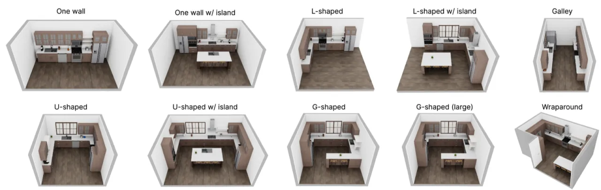
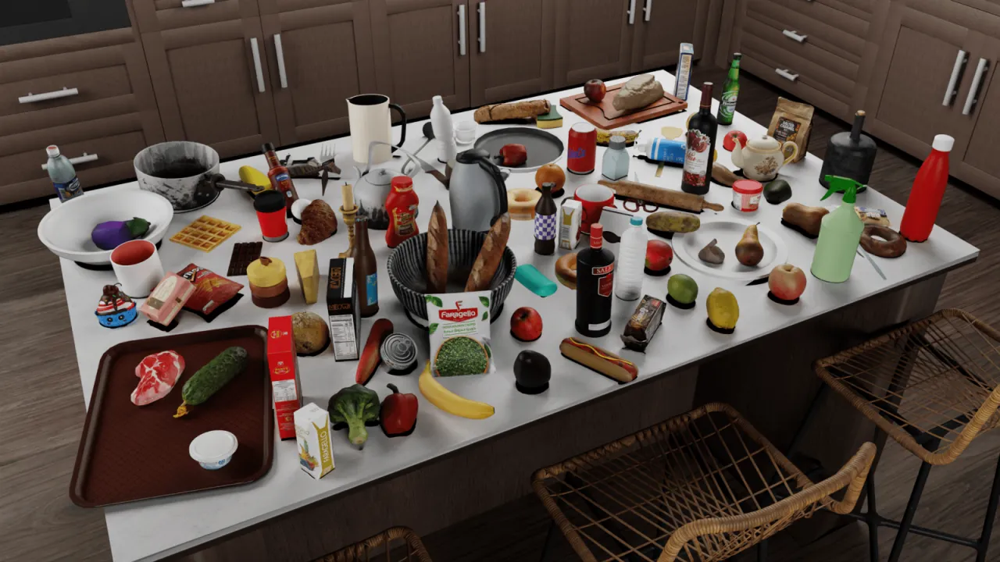
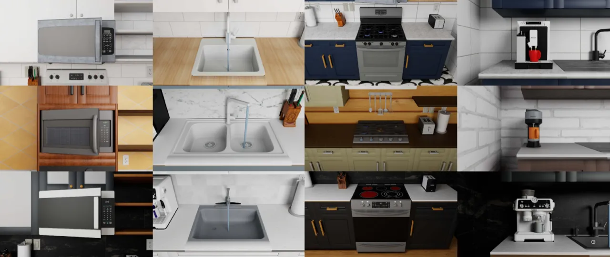
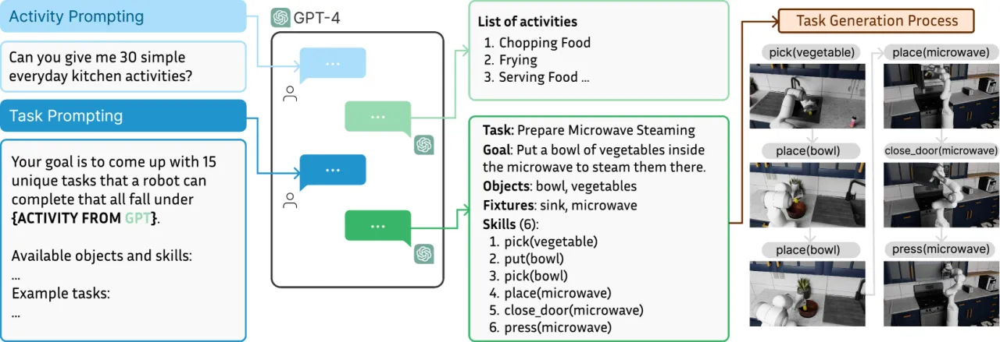
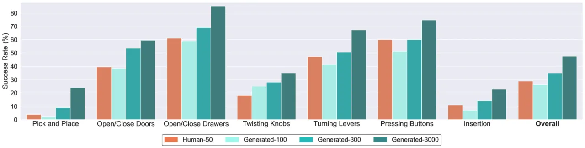
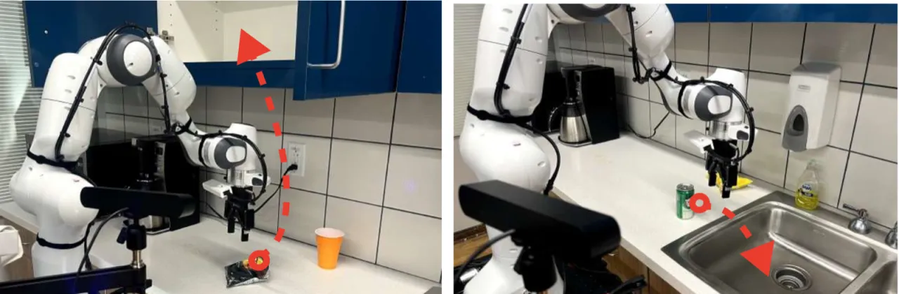

RoboCasa 是一个面向通用家用机器人的大规模仿真框架，专注于厨房场景。它提供 120 个高度多样化的场景配置、2,509 个跨 153 类别的高质量 3D 资产，以及 100 项覆盖原子到复合层级的操作任务。通过 MimicGen 自动生成合成轨迹，框架实现了可扩展的模仿学习，并在真实机器人上验证了 sim-to-real 迁移效果。
训练通用机器人的最大瓶颈在于大规模、多样化数据集的匮乏。现实采集成本极高，而现有仿真环境场景单一、资产稀少，难以覆盖日常家务的复杂性。RoboCasa 旨在通过构建写实感强的大规模厨房仿真，结合 AI 生成工具（text-to-3D、text-to-image、LLM 任务生成），为机器人学习提供可扩展的合成数据源。
"We present RoboCasa, a large-scale simulation framework for training generalist robots in everyday environments. We focus on the kitchen as a setting that offers diverse challenges, including object diversity, spatial reasoning, and long-horizon task execution."


RoboCasa 由三个核心组件构成：（1）写实的厨房仿真环境，支持多种机器人形态；（2）结合 LLM 自动生成的 100 项任务；（3）基于 MimicGen 的大规模合成数据生成流程。框架构建于 RoboSuite / MuJoCo 之上，通过 NVIDIA Omniverse 实现照片级渲染，仿真速度约 25.2 fps。
场景设计兼顾视觉多样性与物理真实性：每个厨房随机化平面布局、建筑风格、墙壁/地板/台面纹理（各 100 种 AI 生成纹理），以及电器和物体摆放。支持带轮底座、人形机器人和四足机器人+手臂等多种形态（cross-embodiment）。电器（微波炉、烤箱、咖啡机、水槽等）均有关节结构和状态变化（如旋钮控制炉灶点火）。

借助 GPT-4 的双阶段提示（first prompt → 20 种高层厨房活动；second prompt → 每类活动的具体任务描述），生成 75 项复合任务，人工过滤逻辑不一致后得到最终任务集。任务涵盖冲咖啡/茶、洗碗、备菜、热饭、摆桌等日常场景，每项任务按原子技能（开/关柜、拾取/放置等）分解为有序子步骤。

每项原子任务仅收集 50 条人工演示（3D SpaceMouse 遥操作），随后通过扩展的 MimicGen 系统自动生成大规模合成轨迹。MimicGen 将演示分解为以物体为中心的操作片段，将各片段适配到新场景配置后拼接执行，使用 rejection sampling 保证成功率，并支持多进程并行生成。最终发布数据集包含 100K+ 轨迹（Human-50 基线 1,250 条 + Generated-3000 等级 72,000 条）。
用于评估的基线策略（BC-Transformer）接受 10 步观测历史与语言目标条件，三路相机输入（手眼、左/右工作区），ResNet-18 视觉编码器 + FiLM 融合，6 层 Transformer（约 2000 万参数），训练 500K 步，学习率 1e-4 with warmup。
实验围绕三条主线展开：（A）原子任务数据规模的扩展效应；（B）复合任务的 fine-tuning 效果；（C）真实机器人的 sim-to-real 迁移验证。评估指标均为任务成功率。
在 24 项原子任务上，将人工演示（Human-50）与不同规模合成数据（Generated-100/300/3000）的多任务策略进行对比：
| 数据集 | 轨迹总数 | 平均成功率 | vs Human-50 |
|---|---|---|---|
| Human-50 | 1,200 | 28.8% | — (基线) |
| Generated-100 | 2,400 | 26.3% | −2.5% |
| Generated-300 | 7,200 | 35.0% | +6.2% |
| Generated-3000 | 72,000 | 47.6% | +65% |

5 项代表性复合任务（ArrangeVegetables、MicrowaveThawing、RestockPantry、PreSoakPan、PrepareCoffee）分别采用"从零学习（50 条人工演示）"与"从原子任务预训练 fine-tuning"两种方式：
| 任务 | 从零学习 | Fine-tuning |
|---|---|---|
| ArrangeVegetables | 2.0% | 12.0% |
| MicrowaveThawing | 0% | 2.0% |
| RestockPantry | 0% | 6.0% |
| PreSoakPan | 0% | 4.0% |
| PrepareCoffee | 0% | 0% |
预训练带来一定提升，但复合任务整体成功率仍极低，长程操作的精细控制和阶段过渡是主要瓶颈。
在真实厨房中用 Franka Panda 带轮移动平台评估三类 pick-and-place 任务（台面→水槽、水槽→台面、台面→柜子），对比"仅真实数据（50 条/任务）"与"真实 + 仿真数据共训练"：
| 训练数据 | 已见物体 | 未见物体 |
|---|---|---|
| Real only | 13.6% | 2.6% |
| Real + Sim（本文） | 24.4% | 9.3% |
| 提升 | +79% | +258% |

5 项复合任务中，从零学习成功率几乎为 0，fine-tuning 后最高也仅 12%（ArrangeVegetables）。论文明确指出"significant room for improvement with better architectures/algorithms"，长程任务的阶段过渡与精细操控是主要失败原因。
MimicGen 生成的轨迹可能包含"jerky motions, collisions"等不理想行为，论文提出未来需自动过滤低质量轨迹，但当前版本尚未实现。
当前框架仅覆盖厨房环境，缺乏灵巧操作（dexterous）、可变形物体（deformable）和双手协作（bimanual manipulation）支持，论文将扩展至其他家居场景列为未来方向。
LLM 仅生成任务描述，实际可执行任务蓝图（task blueprints）仍需人工编写代码，限制了任务规模的进一步扩展。论文提出探索 LLM-based code generation 作为未来方向。
真实机器人实验中，已见物体成功率为 24.4%，未见物体仅 9.3%，表明模型对新物体的视觉泛化能力有限，仿真与真实环境间的 domain gap 仍然显著。